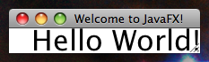

public class Stage extends Window
Stage class is the top level JavaFX container.
The primary Stage is constructed by the platform. Additional Stage
objects may be constructed by the application.
Stage objects must be constructed and modified on the JavaFX Application Thread.
Many of the Stage properties are read only because they can
be changed externally by the underlying platform and therefore must
not be bindable.
Style
A stage has one of the following styles:
StageStyle.DECORATED - a stage with a solid white background and
platform decorations.StageStyle.UNDECORATED - a stage with a solid white background
and no decorations.StageStyle.TRANSPARENT - a stage with a transparent background
and no decorations.StageStyle.UTILITY - a stage with a solid white background and
minimal platform decorations.The style must be initialized before the stage is made visible.
Owner
A stage can optionally have an owner Window. When a window is a stage's owner, it is said to be the parent of that stage. When a parent window is closed, all its descendant windows are closed. The same chained behavior applied for a parent window that is iconified. A stage will always be on top of its parent window. The owner must be initialized before the stage is made visible.
Modality
A stage has one of the following modalities:
Modality.NONE - a stage that does not block any other window.Modality.WINDOW_MODAL - a stage that blocks input events from
being delivered to all windows from its owner (parent) to its root.
Its root is the closest ancestor window without an owner.Modality.APPLICATION_MODAL - a stage that blocks input events from
being delivered to all windows from the same application, except for those
from its child hierarchy.When a window is blocked by a modal stage its Z-order relative to its ancestors
is preserved, and it receives no input events and no window activation events,
but continues to animate and render normally.
Note that showing a modal stage does not necessarily block the caller. The
show() method returns immediately regardless of the modality of the stage.
Use the showAndWait() method if you need to block the caller until
the modal stage is hidden (closed).
The modality must be initialized before the stage is made visible.
Example:
import javafx.application.Application;
import javafx.scene.Group;
import javafx.scene.Scene;
import javafx.scene.text.Text;
import javafx.stage.Stage;
public class HelloWorld extends Application {
@Override public void start(Stage stage) {
Scene scene = new Scene(new Group(new Text(25, 25, "Hello World!")));
stage.setTitle("Welcome to JavaFX!");
stage.setScene(scene);
stage.sizeToScene();
stage.show();
}
public static void main(String[] args) {
Application.launch(args);
}
}
produces the following on Mac OSX:

produces the following on Windows XP:
produces the following on Windows Vista:
| Type | Property and Description |
|---|---|
ReadOnlyBooleanProperty |
fullScreen
Specifies whether this
Stage should be a full-screen,
undecorated window. |
ReadOnlyBooleanProperty |
iconified
Defines whether the
Stage is iconified or not. |
DoubleProperty |
maxHeight
Defines the maximum height of this
Stage. |
DoubleProperty |
maxWidth
Defines the maximum width of this
Stage. |
DoubleProperty |
minHeight
Defines the minimum height of this
Stage. |
DoubleProperty |
minWidth
Defines the minimum width of this
Stage. |
BooleanProperty |
resizable
Defines whether the
Stage is resizable or not by the user. |
StringProperty |
title
Defines the title of the
Stage. |
| Constructor and Description |
|---|
Stage()
Creates a new instance of decorated
Stage. |
Stage(StageStyle style)
Creates a new instance of
Stage. |
| Modifier and Type | Method and Description |
|---|---|
void |
close()
Closes this
Stage. |
ReadOnlyBooleanProperty |
fullScreenProperty()
Specifies whether this
Stage should be a full-screen,
undecorated window. |
ObservableList<Image> |
getIcons()
Gets the icon images to be used in the window decorations and when
minimized.
|
double |
getMaxHeight()
Gets the value of the property maxHeight.
|
double |
getMaxWidth()
Gets the value of the property maxWidth.
|
double |
getMinHeight()
Gets the value of the property minHeight.
|
double |
getMinWidth()
Gets the value of the property minWidth.
|
Modality |
getModality()
Retrieves the modality attribute for this stage.
|
Window |
getOwner()
Retrieves the owner Window for this stage, or null for an unowned stage.
|
StageStyle |
getStyle()
Retrieves the style attribute for this stage.
|
java.lang.String |
getTitle()
Gets the value of the property title.
|
ReadOnlyBooleanProperty |
iconifiedProperty()
Defines whether the
Stage is iconified or not. |
void |
initModality(Modality modality)
Specifies the modality for this stage.
|
void |
initOwner(Window owner)
Specifies the owner Window for this stage, or null for a top-level,
unowned stage.
|
void |
initStyle(StageStyle style)
Specifies the style for this stage.
|
boolean |
isFullScreen()
Gets the value of the property fullScreen.
|
boolean |
isIconified()
Gets the value of the property iconified.
|
boolean |
isResizable()
Gets the value of the property resizable.
|
DoubleProperty |
maxHeightProperty()
Defines the maximum height of this
Stage. |
DoubleProperty |
maxWidthProperty()
Defines the maximum width of this
Stage. |
DoubleProperty |
minHeightProperty()
Defines the minimum height of this
Stage. |
DoubleProperty |
minWidthProperty()
Defines the minimum width of this
Stage. |
BooleanProperty |
resizableProperty()
Defines whether the
Stage is resizable or not by the user. |
void |
setFullScreen(boolean value)
Sets the value of the property fullScreen.
|
void |
setIconified(boolean value)
Sets the value of the property iconified.
|
void |
setMaxHeight(double value)
Sets the value of the property maxHeight.
|
void |
setMaxWidth(double value)
Sets the value of the property maxWidth.
|
void |
setMinHeight(double value)
Sets the value of the property minHeight.
|
void |
setMinWidth(double value)
Sets the value of the property minWidth.
|
void |
setResizable(boolean value)
Sets the value of the property resizable.
|
void |
setScene(Scene value)
Specify the scene to be used on this stage.
|
void |
setTitle(java.lang.String value)
Sets the value of the property title.
|
void |
show()
Attempts to show this Window by setting visibility to true
|
void |
showAndWait()
Shows this stage and waits for it to be hidden (closed) before returning
to the caller.
|
StringProperty |
titleProperty()
Defines the title of the
Stage. |
void |
toBack()
Send the
Window to the background. |
void |
toFront()
Bring the
Window to the foreground. |
addEventFilter, addEventHandler, buildEventDispatchChain, centerOnScreen, eventDispatcherProperty, fireEvent, focusedProperty, getEventDispatcher, getHeight, getOnCloseRequest, getOnHidden, getOnHiding, getOnShowing, getOnShown, getOpacity, getScene, getWidth, getX, getY, heightProperty, hide, isFocused, isShowing, onCloseRequestProperty, onHiddenProperty, onHidingProperty, onShowingProperty, onShownProperty, opacityProperty, removeEventFilter, removeEventHandler, requestFocus, sceneProperty, setEventDispatcher, setEventHandler, setHeight, setOnCloseRequest, setOnHidden, setOnHiding, setOnShowing, setOnShown, setOpacity, setWidth, setX, setY, showingProperty, sizeToScene, widthProperty, xProperty, yPropertypublic final ReadOnlyBooleanProperty fullScreenProperty
Stage should be a full-screen,
undecorated window.
The implementation of full-screen mode is platform and profile-dependent.
When set to true, the Stage will attempt to enter
full-screen mode when visible. Set to false to return Stage
to windowed mode.
An IllegalStateException is thrown if this property is set
on a thread other than the JavaFX Application Thread.
The full-screen mode will be exited (and the fullScreen attribute
will be set to false) if the full-screen
Stage loses focus or if another Stage enters
full-screen mode on the same Screen. Note that a Stage
in full-screen mode can become invisible without losing its
full-screen status and will again enter full-screen mode when the
Stage becomes visible.
Screen the Stage will enter full-screen mode on by
setting its position to be within the bounds of that Screen
prior to entering full-screen mode.
However once in full-screen mode, Stage's x, y,
width, and height variables will continue to represent
the non-full-screen position and size of the window; the same for
iconified, resizable, style, and opacity. If changes are made to any of these attributes while in
full-screen mode, upon exiting full-screen mode the Stage will
assume those attributes.
The property is read only because it can be changed externally by the underlying platform and therefore must not be bindable.
Notes regarding desktop profile implementation.For desktop profile the runtime will attempt to enter full-screen exclusive mode (FSEM) if such is supported by the platform and it is allowed for this application. If either is not the case a simulated full-screen window will be used instead; the window will be maximized, made undecorated if possible, and moved to the front.
The user can unconditionally exit full-screen mode at any time by pressingESC.
There are differences in behavior between signed and unsigned applications. Signed applications are allowed to enter full-screen exclusive mode unrestricted while unsigned applications will have the following restrictions:
Node.mousePressed/mouseReleased/mouseClicked) or keyboard
(Node.keyPressed/keyReleased/keyTyped) event handlers. It is
not allowed to enter FSEM in response to ESC
key. Attempting to enter FSEM from any other context will result in
emulated full-screen mode.
If Stage was constructed as full-screen but not visible
it will enter full-screen mode upon becoming visible, with the same
limitations to when this is allowed to happen as when setting
fullScreen to true.
UP, DOWN, LEFT, RIGHT, SPACE, TAB, PAGE_UP, PAGE_DOWN, HOME, END, ENTER
isFullScreen(),
setFullScreen(boolean)public final StringProperty titleProperty
Stage.getTitle(),
setTitle(String)public final ReadOnlyBooleanProperty iconifiedProperty
Stage is iconified or not.
The property is read only because it can be changed externally by the underlying platform and therefore must not be bindable.
isIconified(),
setIconified(boolean)public final BooleanProperty resizableProperty
Stage is resizable or not by the user.
Programatically you may still change the size of the Stage. This is
a hint which allows the implementation to optionally make the Stage
resizable by the user.isResizable(),
setResizable(boolean)public final DoubleProperty minWidthProperty
Stage.getMinWidth(),
setMinWidth(double)public final DoubleProperty minHeightProperty
Stage.getMinHeight(),
setMinHeight(double)public final DoubleProperty maxWidthProperty
Stage.getMaxWidth(),
setMaxWidth(double)public final DoubleProperty maxHeightProperty
Stage.getMaxHeight(),
setMaxHeight(double)public Stage()
Stage.java.lang.IllegalStateException - if this constructor is called on a thread
other than the JavaFX Application Thread.public Stage(StageStyle style)
Stage.style - The style of the Stagejava.lang.IllegalStateException - if this constructor is called on a thread
other than the JavaFX Application Thread.public final void setScene(Scene value)
public final void show()
Windowpublic void showAndWait()
A Stage is hidden (closed) by one of the following means:
Window.hide() or close() method on
this stageAfter the Stage is hidden, and the application has returned from the event handler to the event loop, the nested event loop terminates and this method returns to the caller.
For example, consider the following sequence of operations for different event handlers, assumed to execute in the order shown below:
void evtHander1(...) {
stage1.showAndWait();
doSomethingAfterStage1Closed(...)
}
void evtHander2(...) {
stage1.hide();
doSomethingElseHere(...)
}
evtHandler1 will block at the call to showAndWait. It will resume execution
after stage1 is hidden and the current event handler, in this case evtHandler2,
returns to the event loop. This means that doSomethingElseHere will
execute before doSomethingAfterStage1Closed.
More than one stage may be shown with showAndWait. Each call will start a new nested event loop. The stages may be hidden in any order, but a particular nested event loop (and thus the showAndWait method for the associated stage) will only terminate after all inner event loops have also terminated.
For example, consider the following sequence of operations for different event handlers, assumed to execute in the order shown below:
void evtHander1() {
stage1.showAndWait();
doSomethingAfterStage1Closed(...)
}
void evtHander2() {
stage2.showAndWait();
doSomethingAfterStage2Closed(...)
}
void evtHander3() {
stage1.hide();
doSomethingElseHere(...)
}
void evtHander4() {
stage2.hide();
doSomethingElseHereToo(...)
}
evtHandler1 will block at the call to stage1.showAndWait, starting up
a nested event loop just like in the previous example. evtHandler2 will
then block at the call to stage2.showAndWait, starting up another (inner)
nested event loop. The first call to stage1.showAndWait will resume execution
after stage1 is hidden, but only after the inner nested event loop started
by stage2.showAndWait has terminated. This means that the call to
stage1.showAndWait won't return until after evtHandler2 has returned.
The order of execution is: stage1.showAndWait, stage2.showAndWait,
stage1.hide, doSomethingElseHere, stage2.hide, doSomethingElseHereToo,
doSomethingAfterStage2Closed, doSomethingAfterStage1Closed.
This method must not be called on the primary stage or on a stage that is already visible.
java.lang.IllegalStateException - if this method is called on a thread
other than the JavaFX Application Thread.java.lang.IllegalStateException - if this method is called on the
primary stage.java.lang.IllegalStateException - if this stage is already showing.public final void initStyle(StageStyle style)
style - the style for this stage.java.lang.IllegalStateException - if this property is set after the stage
has ever been made visible.public final StageStyle getStyle()
public final void initModality(Modality modality)
modality - the modality for this stage.java.lang.IllegalStateException - if this property is set after the stage
has ever been made visible.java.lang.IllegalStateException - if this stage is the primary stage.public final Modality getModality()
public final void initOwner(Window owner)
owner - the owner for this stage.java.lang.IllegalStateException - if this property is set after the stage
has ever been made visible.java.lang.IllegalStateException - if this stage is the primary stage.public final Window getOwner()
public final void setFullScreen(boolean value)
Stage should be a full-screen,
undecorated window.
The implementation of full-screen mode is platform and profile-dependent.
When set to true, the Stage will attempt to enter
full-screen mode when visible. Set to false to return Stage
to windowed mode.
An IllegalStateException is thrown if this property is set
on a thread other than the JavaFX Application Thread.
The full-screen mode will be exited (and the fullScreen attribute
will be set to false) if the full-screen
Stage loses focus or if another Stage enters
full-screen mode on the same Screen. Note that a Stage
in full-screen mode can become invisible without losing its
full-screen status and will again enter full-screen mode when the
Stage becomes visible.
Screen the Stage will enter full-screen mode on by
setting its position to be within the bounds of that Screen
prior to entering full-screen mode.
However once in full-screen mode, Stage's x, y,
width, and height variables will continue to represent
the non-full-screen position and size of the window; the same for
iconified, resizable, style, and opacity. If changes are made to any of these attributes while in
full-screen mode, upon exiting full-screen mode the Stage will
assume those attributes.
The property is read only because it can be changed externally by the underlying platform and therefore must not be bindable.
Notes regarding desktop profile implementation.For desktop profile the runtime will attempt to enter full-screen exclusive mode (FSEM) if such is supported by the platform and it is allowed for this application. If either is not the case a simulated full-screen window will be used instead; the window will be maximized, made undecorated if possible, and moved to the front.
The user can unconditionally exit full-screen mode at any time by pressingESC.
There are differences in behavior between signed and unsigned applications. Signed applications are allowed to enter full-screen exclusive mode unrestricted while unsigned applications will have the following restrictions:
Node.mousePressed/mouseReleased/mouseClicked) or keyboard
(Node.keyPressed/keyReleased/keyTyped) event handlers. It is
not allowed to enter FSEM in response to ESC
key. Attempting to enter FSEM from any other context will result in
emulated full-screen mode.
If Stage was constructed as full-screen but not visible
it will enter full-screen mode upon becoming visible, with the same
limitations to when this is allowed to happen as when setting
fullScreen to true.
UP, DOWN, LEFT, RIGHT, SPACE, TAB, PAGE_UP, PAGE_DOWN, HOME, END, ENTER
public final boolean isFullScreen()
Stage should be a full-screen,
undecorated window.
The implementation of full-screen mode is platform and profile-dependent.
When set to true, the Stage will attempt to enter
full-screen mode when visible. Set to false to return Stage
to windowed mode.
An IllegalStateException is thrown if this property is set
on a thread other than the JavaFX Application Thread.
The full-screen mode will be exited (and the fullScreen attribute
will be set to false) if the full-screen
Stage loses focus or if another Stage enters
full-screen mode on the same Screen. Note that a Stage
in full-screen mode can become invisible without losing its
full-screen status and will again enter full-screen mode when the
Stage becomes visible.
Screen the Stage will enter full-screen mode on by
setting its position to be within the bounds of that Screen
prior to entering full-screen mode.
However once in full-screen mode, Stage's x, y,
width, and height variables will continue to represent
the non-full-screen position and size of the window; the same for
iconified, resizable, style, and opacity. If changes are made to any of these attributes while in
full-screen mode, upon exiting full-screen mode the Stage will
assume those attributes.
The property is read only because it can be changed externally by the underlying platform and therefore must not be bindable.
Notes regarding desktop profile implementation.For desktop profile the runtime will attempt to enter full-screen exclusive mode (FSEM) if such is supported by the platform and it is allowed for this application. If either is not the case a simulated full-screen window will be used instead; the window will be maximized, made undecorated if possible, and moved to the front.
The user can unconditionally exit full-screen mode at any time by pressingESC.
There are differences in behavior between signed and unsigned applications. Signed applications are allowed to enter full-screen exclusive mode unrestricted while unsigned applications will have the following restrictions:
Node.mousePressed/mouseReleased/mouseClicked) or keyboard
(Node.keyPressed/keyReleased/keyTyped) event handlers. It is
not allowed to enter FSEM in response to ESC
key. Attempting to enter FSEM from any other context will result in
emulated full-screen mode.
If Stage was constructed as full-screen but not visible
it will enter full-screen mode upon becoming visible, with the same
limitations to when this is allowed to happen as when setting
fullScreen to true.
UP, DOWN, LEFT, RIGHT, SPACE, TAB, PAGE_UP, PAGE_DOWN, HOME, END, ENTER
public final ReadOnlyBooleanProperty fullScreenProperty()
Stage should be a full-screen,
undecorated window.
The implementation of full-screen mode is platform and profile-dependent.
When set to true, the Stage will attempt to enter
full-screen mode when visible. Set to false to return Stage
to windowed mode.
An IllegalStateException is thrown if this property is set
on a thread other than the JavaFX Application Thread.
The full-screen mode will be exited (and the fullScreen attribute
will be set to false) if the full-screen
Stage loses focus or if another Stage enters
full-screen mode on the same Screen. Note that a Stage
in full-screen mode can become invisible without losing its
full-screen status and will again enter full-screen mode when the
Stage becomes visible.
Screen the Stage will enter full-screen mode on by
setting its position to be within the bounds of that Screen
prior to entering full-screen mode.
However once in full-screen mode, Stage's x, y,
width, and height variables will continue to represent
the non-full-screen position and size of the window; the same for
iconified, resizable, style, and opacity. If changes are made to any of these attributes while in
full-screen mode, upon exiting full-screen mode the Stage will
assume those attributes.
The property is read only because it can be changed externally by the underlying platform and therefore must not be bindable.
Notes regarding desktop profile implementation.For desktop profile the runtime will attempt to enter full-screen exclusive mode (FSEM) if such is supported by the platform and it is allowed for this application. If either is not the case a simulated full-screen window will be used instead; the window will be maximized, made undecorated if possible, and moved to the front.
The user can unconditionally exit full-screen mode at any time by pressingESC.
There are differences in behavior between signed and unsigned applications. Signed applications are allowed to enter full-screen exclusive mode unrestricted while unsigned applications will have the following restrictions:
Node.mousePressed/mouseReleased/mouseClicked) or keyboard
(Node.keyPressed/keyReleased/keyTyped) event handlers. It is
not allowed to enter FSEM in response to ESC
key. Attempting to enter FSEM from any other context will result in
emulated full-screen mode.
If Stage was constructed as full-screen but not visible
it will enter full-screen mode upon becoming visible, with the same
limitations to when this is allowed to happen as when setting
fullScreen to true.
UP, DOWN, LEFT, RIGHT, SPACE, TAB, PAGE_UP, PAGE_DOWN, HOME, END, ENTER
isFullScreen(),
setFullScreen(boolean)public final ObservableList<Image> getIcons()
public final void setTitle(java.lang.String value)
Stage.public final java.lang.String getTitle()
Stage.public final StringProperty titleProperty()
Stage.getTitle(),
setTitle(String)public final void setIconified(boolean value)
Stage is iconified or not.
The property is read only because it can be changed externally by the underlying platform and therefore must not be bindable.
public final boolean isIconified()
Stage is iconified or not.
The property is read only because it can be changed externally by the underlying platform and therefore must not be bindable.
public final ReadOnlyBooleanProperty iconifiedProperty()
Stage is iconified or not.
The property is read only because it can be changed externally by the underlying platform and therefore must not be bindable.
isIconified(),
setIconified(boolean)public final void setResizable(boolean value)
Stage is resizable or not by the user.
Programatically you may still change the size of the Stage. This is
a hint which allows the implementation to optionally make the Stage
resizable by the user.public final boolean isResizable()
Stage is resizable or not by the user.
Programatically you may still change the size of the Stage. This is
a hint which allows the implementation to optionally make the Stage
resizable by the user.public final BooleanProperty resizableProperty()
Stage is resizable or not by the user.
Programatically you may still change the size of the Stage. This is
a hint which allows the implementation to optionally make the Stage
resizable by the user.isResizable(),
setResizable(boolean)public final void setMinWidth(double value)
Stage.public final double getMinWidth()
Stage.public final DoubleProperty minWidthProperty()
Stage.getMinWidth(),
setMinWidth(double)public final void setMinHeight(double value)
Stage.public final double getMinHeight()
Stage.public final DoubleProperty minHeightProperty()
Stage.getMinHeight(),
setMinHeight(double)public final void setMaxWidth(double value)
Stage.public final double getMaxWidth()
Stage.public final DoubleProperty maxWidthProperty()
Stage.getMaxWidth(),
setMaxWidth(double)public final void setMaxHeight(double value)
Stage.public final double getMaxHeight()
Stage.public final DoubleProperty maxHeightProperty()
Stage.getMaxHeight(),
setMaxHeight(double)public void toFront()
Window to the foreground. If the Window is
already in the foreground there is no visible difference.public void toBack()
Window to the background. If the Window is
already in the background there is no visible difference. This action
places this Window at the bottom of the stacking order on
platforms that support stacking.public void close()
Stage.
This call is equivalent to hide().Copyright (c) 2008, 2014, Oracle and/or its affiliates. All rights reserved.